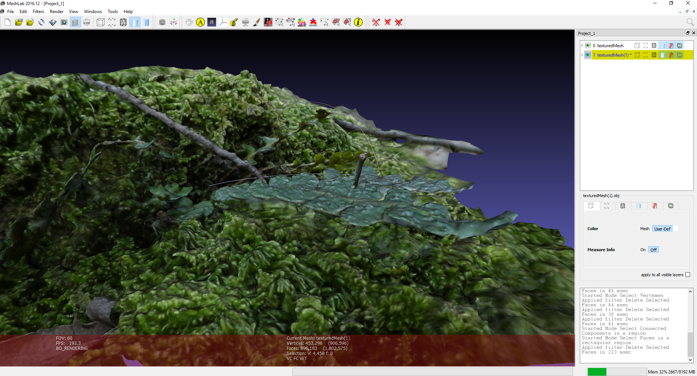
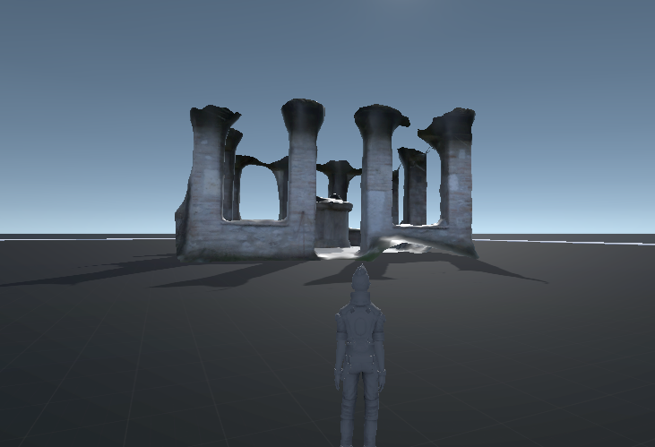

View and Edit Models¶
Meshlab¶
You can drag and drop different OBJ and PLY files as layers.

So in this case I have a layer for both the final mesh and the SFM points/cameras. Sometimes the mesh smoothing step can be a little too aggressive so I find it useful to compare between the original mesh and the smooth mesh. If the mesh looks broken, the PLY sfm data and the OBJ meshes are great for tracing through the pipeline.
clean up / delete / smooth
The first thing you want to do is to rotate your model and align it with the coordinate system.
You can import the obj into Meshlab then go to Filters > Normals, Curvatures ** and **Orientation > Transform: Rotate ** ** and align it yourself from there. ** **
There might be some parts of the model or the scene you want to remove.
You can select ….. then remove…
http://www.banterle.com/francesco/courses/2017/be_3drec/slides/Meshlab.pdf
www.scanner.imagefact.de/tut/meshlabTut.pdf
Smooth mesh
If you don’t like the smoothing results from Meshroom, you can smooth the mesh yourself.
http://www.cs.cmu.edu/~reconstruction/advanced.html#meshlab
Tutorials by Mister P. MeshLab Tutorials MeshLab Basics: Navigation
MeshLab Basics: Selection, part one
MeshLab Basics: Selection, part two
Cleaning: Triangles and Vertices Removal
Blender¶
For detailed instructions visit the blender homepage or the blender youtube channel .
Here is a quick tutorial on how to optimize photogrammetry objects inside Blender: How to 3D Photoscan Easy and Free!
https://www.youtube.com/watch?v=k4NTf0hMjtY
meshing filtering 10:18 / 13:17 blender import
Meshroom2Blender Blender Plugin¶
Blender importer of ` <https://alicevision.github.io/#meshroom>`_ AliceVision Meshroom datafiles: cameras, images, sparse pointcloud and obj’s.
Basic implementation of Meshroom importer. If you have s o phisticated node t ree it will use only the first nodes from the file. Addon assumes you did compute each stages/nodes, and the output is same. Visit the Github project site for details.

BlenderLandscape¶
Addon for Blender 2.79b. 3DSurvey Collection of tools to improve the work-flow of a 3D survey (terrestrial or UAV photogrammetry). Import multiple objs at once (with correct orientation), for instance a bunch of models made in Meshroom. https://github.com/zalmoxes-laran/BlenderLandscape
Instant Meshes¶
https://github.com/wjakob/instant-meshes
includes quick intro
why do we want to use it? It is a really fast auto-retopology solution and helps you create more accurate meshes

Export model to Unity¶
Start Unity, open your project and your asset folder.
Navigate in the file Explorer of your OS to the assets subfolder where you want to store your Photogrammetry object.
Copy the model.obj and texture.jpg (or other supported file types) from the Meshroom Export folder to the Unity assets subfolder.
Open Unity and wait for the auto-import to complete.
You might want to optimize your mesh and texture for ingame use.
Now you can add your model to the scene.
There is a little more to do to create a simple demo game, like adding a Mesh collider, optimize the texture,…
For detailed instructions visit the Unity homepage .
Here is a manual on how to optimize photogrammetry objects inside Unity: Unity Photogrammetry Workflow .. image:: 100000000000076E00000401AC14E84A53702851.png
Export to Maya (Plugin)¶
MeshroomMaya (v0.4.2) is a Maya plugin that enables to model 3D objects from images.
Photomodeling plugin for Autodesk © Maya
MeshroomMaya allows graphic artists to do photomodeling on top of a 3D reconstruction (point cloud and cameras) with pixel precision.

Installation
https://github.com/alicevision/MeshroomMaya
Documentation
https://github.com/alicevision/MeshroomMaya/blob/develop/doc/Documentation.v0.4.2.md
Start
The first time you use MeshroomMaya, you need to load the plugin (via Window → Settings/Preferences → Plug-in Manager). Tick the autoload option to have it automatically loaded next time. You can now open the plugin window (via MeshroomMaya → Open).
Load a project
MeshroomMaya allows you to load a Meshroom reconstruction. Choose the Alembic file at the root of the project.
Interface
MeshroomMaya toolbar and parameters are presented as follow:

Toolbar

Maya mode

Creation mode (MVG)

Triangulation mode (MVG)

Move base on point cloud mode (MVG)

Move in adjacent plane mode (MVG)

Locator mode (to reorient scene) (MVG)

Open/Close parameters

Show cameras

Show meshes
Parameters
Load .abc file

Delete all 2D data.

Select closest camera from Maya perspective view.
Set locator as origin of scene
Thumbnail size
Camera thumbnail size
Display point cloud
Show/hide pointcloud in plugin views.
Active synchronisation
Activate/Deactivate synchronisation on selection (meshes and cameras) between Maya and plugin

Remap images paths from alembic project file (if project as been moved for example)
Camera Near & Far
Set Near/Far Clip Planes for all cameras
Camera Locator Scale
Set camera locator size in viewport.
Viewport

One project is loaded, the different views are displayed below toolbar and parameters. You can choose which camera you want to display in MeshroomMaya viewports.
Mouse wheel : zoom and unzoom in image
Middle Mouse Button : move in image
Modes
Creation
New face
Shortcut : CTRL + 0
This tool enables to create a face according to point cloud. You have to create four points.
Note : If no plane is detected when you are putting the last point of the face, the polygon will be displayed in red.
Extend a face
A new face can be create from an existing edge. You have to click the edge and move it.
Tip : Pressing V key, the new created face will snap to existing edges and points..
Move
Triangulation
Shortcut : CTRL + 1
This tool enable to set a 3D point more precisely from 2D points clicked on MeshroomMaya view. It does not use the point cloud at all. You need to set this point in at least two views.
Pressing “Enter”’ key, the 2D positions will be erased.
Note : The more views the point is placed in, the more accurate the 3D position will be. The number of views in which the points have been placed is displayed for all points.
Warning : Mesh should not have transform value. You have to make a freeze transform if you created it with Maya.
Move base on point cloud
Shortcut : CTRL + 2
Point or edge is moved in a new plane, computed from point cloud.
Move in adjacent plane
Shortcut : CTRL + 3
Point or edge is moved in the plane in which it already is.
Locator
Create locator by triangulation
This tool enables to set a locator by triangulated its position. You need to place a 2D point on at least two different views. The 3D position will be automatically computed and locator will be created there.
Tip : The more 2D points there is, the more the 3D position will be accurate.
Once the locator created, it can be adjusted with Maya tools (rotation, scale, move, …) Once correctly place, you have to click on the Locator button in parameters
to apply the transformation.
Create locator from vertex
Locator can also be created from an existing vertex. You have to set vertex selection mode and select the vertex from which you want to create the locator. Then, in MeshroomMaya menu, click on “Create locator from vertex”.

Proceed as in “Create locator by triangulation” section to place it more precisely and click on Locator button in parameters (
) to apply transformation.
Cameras
To set a camera in one of the MeshroomMaya view, click on the corresponding thumbnail.
Tip : If you select a camera in Maya, it automatically selects it in MeshroomMaya and load it in the left viewport. You can also select the camera directly from MeshroomMaya.

Meshes
To display meshes list, click on icon .. image:: mesh.png
.
Meshes can be activated/deactivated in plugin.
Tip : In order to optimize performance, it’s recommended to deactivate meshes that are not used for modeling.
Alembic bridge¶
Export from MeshroomMaya
Select meshes and cameras to export. Click on menu : “MeshroomMaya > Export selection as ABC” to choose file location.
Import in Nuke/Mari
In menu “NukeMVG > Import Alembic” , .abc file can be loaded. The tool create the graph of camera projection. Result can be export to Mari via Nuke<>Mari bridge.

SideFX Houdini Plugin¶
An implementation of Alicevision is available in Houdini as part of the (free) GameDevelopmentToolset.
You can find Installation Instructions on the following page: https://www.sidefx.com/tutorials/alicevision-plugin/
Review (german):
https://www.digitalproduction.com/2019/02/26/alicevision-photogrammetrie-in-houdini/
Students can download the free learning edition called ` <https://www.sidefx.com/products/compare/>`_ Houdini Apprentice . This is a node-locked license that has all the features of Houdini FX with some restrictions such as a limited render size and a watermark on final renderings.